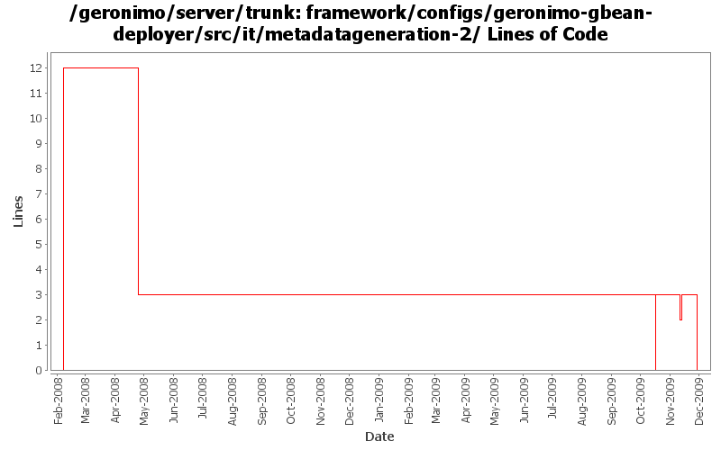

[root]/framework/configs/geronimo-gbean-deployer/src/it/metadatageneration-2
 src
(0 files, 0 lines)
src
(0 files, 0 lines)
 main
(0 files, 0 lines)
main
(0 files, 0 lines)
 plan
(0 files, 0 lines)
plan
(0 files, 0 lines)
 test
(0 files, 0 lines)
test
(0 files, 0 lines)
 resources
(0 files, 0 lines)
resources
(0 files, 0 lines)
 META-INF
(0 files, 0 lines)
META-INF
(0 files, 0 lines)

| Author | Changes | Lines of Code | Lines per Change |
|---|---|---|---|
| Totals | 19 (100.0%) | 21 (100.0%) | 1.1 |
| djencks | 13 (68.4%) | 16 (76.2%) | 1.2 |
| rickmcguire | 2 (10.5%) | 2 (9.5%) | 1.0 |
| jbohn | 1 (5.3%) | 1 (4.8%) | 1.0 |
| gawor | 1 (5.3%) | 1 (4.8%) | 1.0 |
| dwoods | 1 (5.3%) | 1 (4.8%) | 1.0 |
| jdillon | 1 (5.3%) | 0 (0.0%) | 0.0 |
GERONIMO-4566 port build changes from 2.2 to allow releasing with release plugin
0 lines of code changed in 3 files:
explicitly version spec packages from the runtime jre and restore provided status of geronimo-gbean-deployer
1 lines of code changed in 1 file:
more xbeans cleanup for the tomcat plugin
1 lines of code changed in 1 file:
GERONIMO-4916 step 2 move sandbox osgi framework into trunk
3 lines of code changed in 3 files:
GERONIMO-4916 step 1 remove old framwork
0 lines of code changed in 3 files:
GERONIMO-4655 upgrade version to 3.0-SNAPSHOT, make a few things more consistent
1 lines of code changed in 1 file:
remove duplicate xpp3/xpp3 depend and only include xpp3_min
1 lines of code changed in 1 file:
create temp files in basedir
1 lines of code changed in 1 file:
(GERONIMO-3985) Use SLF4J as the primary logging facade for Geronimo
0 lines of code changed in 1 file:
GERONIMO-3827 move tests that require geronimo-gbean-deployer to when it is available - update pom versions for 2.2-SNAPSHOT
1 lines of code changed in 1 file:
GERONIMO-3827 likely fix. Move tests that require geronimo-gbean-deployer to when it is available. port from branches/2.1
12 lines of code changed in 3 files: